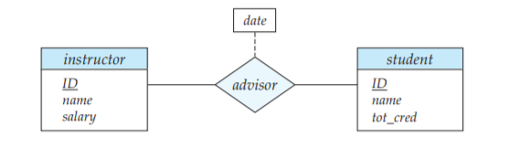
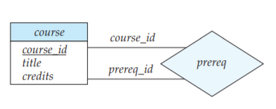
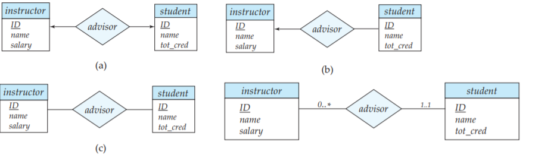
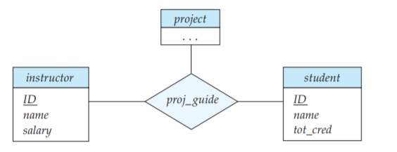
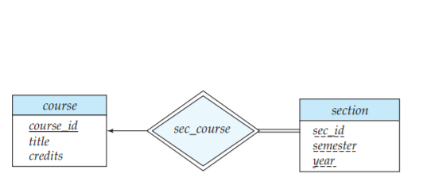

1. E-R model
1. 设计过程概述
现实中的应用通常十分复杂，数据库设计的步骤通常如下：
- 需求分析：制订用户需求的规格说明；
- 概念数据库设计：设计者选择数据模型，并采用所选数据模型的概念将这些需求转化为数据库的概念模式；
- 逻辑数据库设计：设计者将高层的概念模式映射到将使用的数据库系统的实现数据模型上，实现数据模型通常是关系数据模型。
- 物理数据库设计：指明数据库的物理特征，包括文件组织格式和索引结构的选择。
2. 实体-联系模型
实体-联系 (
(1). 基本概念
① 实体集：具有相同性质或属性的实体的一个集合。实体即现实世界中一个事物或对象。
② 属性：实体中每个成员具有的描述性性质，其取值范围称为该属性的 域 (
- 简单和复合 (
composite ) 属性：复合属性可以划分为更小的部分 - 属性 $\small\mathit{name}$ 可设计为包含 $\small\mathit{first\_name}$ 和 $\small\mathit{last\_name}$ 的复合属性；
- 复合属性可以具有层次结构；
- 单值和多值属性：一个属性有时可能对应一组值
- 多值的属性名需要用花括号括住，例如 $\small\lbrace\mathit{phone\_number}\rbrace$
- 派生 (
derived ) 属性：这类属性的值可以从其他相关属性或实体派生出来 - 设 $\small\mathrm{instructor}$ 有属性 $\small\mathit{advise\_stu\_num}$ ，那么它可由相关联的 $\small\mathrm{student}$ 实体派生；
③ 联系集：相同类型联系的集合，$\small R\subset\lbrace\ (e_1,e_2,...,e_n)\ |\ e_1\in E_1,e_2\in E_2,...,e_n\in E_n\rbrace$，其中
$\small n\geq 2$。称实体集 $\small E_1,E_2,...,E_n$ 参与 (
- 联系集可具有描述性属性，例如为 $\small\mathrm{instructor}$ 和 $\small\mathrm{student}$ 的联系集 $\small\mathrm{adivsor}$ 添加属性 $\small\mathit{date}$
(2). 约束
① 映射基数 (
② 参与约束：如果实体集 $\small E$ 的每个实体都参与到 $\small R$ 的至少一个联系中，$\small E$ 在 $\small R$ 中的参与称为全部的(
③ 码：关系模式的超码、候选码、主码的概念仍适用于实体。
- 联系集 $\small R$ 的属性集为 $\small\mathit{primary}$-$\small\mathit{key}\ (E_1)\cup...\cup\mathit{primary}$-$\small\mathit{key}\ (E_n)\cup\lbrace a_1,...,a_n\rbrace$。其中 $a_i$ 是联系集的描述性属性。若 $\small E_i$ 间的属性重名且重名属性含义不同，则重命名加以区分；
- $\small\mathit{primary}$-$\small\mathit{key}\ (E_1)\cup...\cup\mathit{primary}$-$\small\mathit{key}\ (E_n)$ 一定是联系集的一个超码
(3). 删除多余属性
在选择好实体及其相应属性后，并为它们建立联系时，可能导致不同实体集的属性冗余，此时需要将其从原始实体集中删除。
e.g.
$\small\mathrm{classroom}\ (\mathit{\textcolor{black}{building}, \textcolor{black}{room\_number}, capacity})$
$\small\mathrm{section}\ (\mathit{\textcolor{black}{course\_id,sec\_id,semester,year},building,room\_number,timeslot\_id})$
$\small\mathrm{sec\_class}$ : 关联 $\small\mathrm{classroom}$ 和 $\small\mathrm{section}$
由于 $\small\mathrm{section}$ 的非主码中包含了 $\small\mathrm{classroom}$ 的主码，在建立联系 $\small\mathrm{sec\_class}$ 后，需要删除 $\small\mathrm{section}$ 中的 $\small\lbrace\mathit{building,room\_number}\rbrace$。
(4). 弱实体集
考虑下面的一种特殊情况：$\small\mathrm{course}\ (\mathit{\textcolor{black}{course\_id},title,dept\_name,credits})$若这样设计，$\small\mathrm{sec\_course}$ 中的信息是冗余的。
$\small\mathrm{section}\ (\mathit{\textcolor{black}{course\_id,sec\_id,semester,year},building,room\_number,timeslot\_id})$
$\small\mathrm{sec\_course}: $ 联系 $\small\mathrm{course}$ 和 $\small\mathrm{section}$。
- 若直接删除 $\small\mathrm{sec\_course}$，通过主属性隐含表达此联系，则后续将
E-R 模型转化为关系模式时无法记录此外键约束；- 因此，暂时删除 $\small\mathrm{section}$ 的 $\small\mathrm{course\_id}$ 属性，将 $\small\mathrm{section}$ 表示为弱实体集
没有足够属性形成主码的实体集称为弱实体集 (
- 属主实体集 (
owner ): 标识弱实体集。称它 拥有 它所标识的若实体集。 - 标识性联系 (
identifying ): 将弱实体集与其属主关联的联系。 - 分辨符 (
discriminator ): 又称部分码，与标识实体集的主码共同组成若实体集的主码。
3. 实体-联系图
(1). 基本结构
- 分成两部分的矩形代表实体集，上面标记名字，下面标记属性，属性的主码以下划线标明，属性的层次结构通过缩进表示,多值属性标注大括号 
- 菱形代表联系集
- 实线连接实体集和联系集，虚线连接联系集和联系集的属性
- 通过矩形和菱形连线上的标注表示角色

(2). 映射基数

① 一对一：两边各一个箭头； ② 一对多："一"侧被单向箭头指向； ③ 多对多：两侧都是线段。
- 实体集和二元联系集的边上标记 $\small l..h$，表示对于实体集中的每一个实体，它的参与度的取值范围在 $\small[l,h]$ 之间
- $l=1$ 表示此实体集的实体全部参与该联系，$h=1$ 表示此实体集的实体至多参与一次该联系。上面的例子表示了从 $\small\mathrm{instructor}$ 到 $\small\mathrm{student}$ 的一个一对多联系。

(3). 非二元联系集*
通过右侧的形式表示。如果要表示 "一个学生在一个项目上至多有一位导师"，只需令 $\small\mathit{proj\_guide}$ 指向 $\small\mathit{instructor}$ 即可。
在一个联系集外至多允许一个箭头，因为包含两个或多个箭头的
假设实体集 $\small A_1,...,A_n$ 之间有联系集 $\small R$，且 $\small R$ 指向 $\small A_{i+1},...,A_{n}$ 的连线是箭头。那么两种可能的解释为：
- 来自 $\small A_{1},...,A_{i}$ 的实体的一个特定组合可以和 $\small A_{i+1},...,A_{n}$ 的组合中的至多一个相关联。因此 $\small R$ 的主码可用 $\small A_{1},...,A_{i}$ 的主码的并集构造；
- 对每个 $\small A_k$ ($\small i< k\leq n$)，来自其他实体集的每个组合可以和来自 $\small A_k$ 的至多一个实体关联。于是对于任意的 $\small i< k\leq n$，每个 $\small\lbrace A_1,...,A_{k-1},A_{k+1},...,A_n\rbrace$ 构成一个候选码。

(4). 弱实体集
2 (4) 中的弱实体集表示为右侧的形式。
- 分辨符以虚下划线标明，而不是实线
- 关联弱实体集和强实体集的联系集用双菱形表示
4. 转换为关系模式
(1). 属性转换
- 复合属性：为每个子属性创造一个新属性；
- 多值属性：构建新的关系模式，包含原实体集的主属性和对应于此多值属性的属性，新模式的主码由所有属性组成，并建立外码约束。
- 如果原实体集只有两个属性，即一个主码 $\small B$ 和一个多值属性 $\small M$，转换后可删掉原实体集对应的模式
- 派生属性：不在关系数据模型中显式表达。
e.g. 实体集 $\small\mathrm{timeslot}(\mathit{\textcolor{black}{time\_slot\_id},\lbrace(day,start\_time,end\_time)\rbrace})$，包含一个主属性和一个多值的、未命名复合属性。转化为关系模式：
$\small\mathrm{time\_slot}(\mathit{\textcolor{black}{time\_slot\_id, day,start\_time},end\_time})$
同一个班不存在两次课，在一天的同一时间开始且在不同时间结束。
(2). 弱实体集的表示
设 $\small A$ 是弱实体集, $\small B$ 是 $\small A$ 依赖的强实体集, 则 $\small A$ 的关系模式的结构为 $\small\lbrace a_1,...,a_m\rbrace\cup\lbrace b_1,...,b_n\rbrace$，其中 $\small a_i$ 是 $\small A$ 的属性，$\small b_i$ 是 $\small B$ 的主属性
- 模式的主码由强实体集的主码和分辨符组成
- 还要在新关系上建立外码约束，指明 $\small\lbrace b_1,...,b_n\rbrace$ 参照 $\small B$ 对应的关系的主码，保证弱实体的每个元组都有一个强实体的元组与之对应
(3). 联系集
① 表示联系集
令 $\small A=\lbrace a_1,...,a_m\rbrace$ 表示所有参与 $\small R$ 的实体集的主码组成的属性集合，$\small B=\lbrace b_1,...,b_n\rbrace$ 是 $\small R$ 的描述性属性集合，则 $\small R$ 的关系模式为 $\small A\cup B$。主码按以下策略选择：
- 多对多：参与实体集的主码的并
- 一对一：任一实体集的主码
- 多对一 / 一对多："多" 的那一方的主码，作为新主码
- 边上无箭头的 $n$ 元联系集：所有参与实体集的主码的并
- 边上有箭头的 $n$ 元联系集：不在箭头侧的实体集的主码 (只允许一个箭头)
② 消除冗余模式
连接弱实体集和强实体集的联系集是多对一的且无描述性属性，由此产生的模式是多余的。
③ 合并模式
考虑从实体集 $\small A$ 到 $\small B$ 的一个多对一的联系集 $\small AB$，得到了三个模式 $a$、$b$、$ab$。
设 $\small A$ 在该联系中的参与是全部的，那么 $\small AB$ 有 $\small A$ 的全部主属性， $a$ 与 $ab$ 可以合并，主码取二者主码的并。
- 即使参与是部分的，也可以通过空值合并模式
- $ab$ 参照 $b$ 的外码约束保留到合并后的模式中